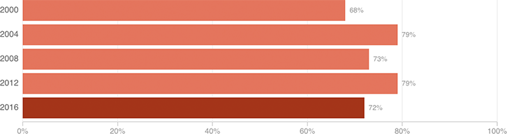

White Evangelicals: The GOP’s Rock-Solid Base
Given the number of white evangelical leaders and churchgoers expressing reservations about Donald Trump this year, it might be a story if this reliably Republican group doesn’t deviate much from past voting patterns. Recent polls suggest that could be the case.
